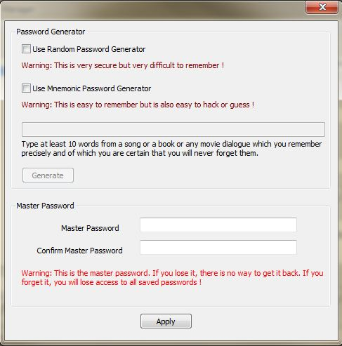
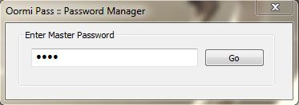

Contents
IntroductionInstallation
System Requirements
Usage
Security and Encryption
Introduction
Oormi Pass is an utility to view and manage passwords.
It maintains and displays your passwords corresponding to various websites and files etc in a categorized way.
All the passwords are encrypted using a master password. More info on security and encryption is given below.
It has a built in password generator and functions to copy, hide, show or change the passwords.
Useful info like the link where you can use this password or usernames and important notes are also stored alongwith the passwords.
The services or sites are organized into groups for easy access. The groups are fully editable and new items can be added or existing items can be edited.
This powerful and useful utility is completely free and open sourced and is cross platform. For more such amazing free apps please visit the links on the left.
The source code of this application is available for anyone to improve, fork, contribute or for use in your own application, without any restrictions.
Installation
Windows 7 to 10
Download the latest Windows binary exe from: GitHub
Run the oormipass.exe program. No installation is needed.
Please read the License before installing and using this software.
Note: It is highly recommended to build your own exe from the source to ensure security. Afterall it stores passwords and hence can become a big security issue. Please visit the Github repo for instructions on building Oormi Pass for windows.
Linux and Mac OS
No binaries at present, but surely you can build them with minor modifications in the code. Please see the readme at GitHub for details and dependencies.
System Requirements
Minimum requirements:
Cross platform, for Microsoft Windows version 7 to 10 are recommended.
Single core CPU
1 GB RAM
15 MB of free space on hard disk
A monitor with at least 800 x 600 resolution.
Usage
When you launch Oormi Pass for the first time, you will see a license and disclaimer dialog, accept it if you agree. Next a master password dialog appears where you need to enter a master password. It has built in password generators. The random password generator generates a complex password in ASCII space. The mnemonic password generator generates a password from a string of words. It simply takes the first letter of each word in that string.
Or you can simply type in your own password. Twice.
Warning: There is no way to recover the master password if it is lost or forgotten. This is intentional. The master password is never stored anywhere by Oormi Pass. Please ensure you memorize it or store it somewhere else at your own risk!
Once you finish entering the master password, a login dialog appears where you can login into Oormi Pass.
Note: If you enter wrong master password three times, the program will exit with a warning. Relaunch Oormi Pass and try again. It will never lock it permanently.

After successful login you will see the main UI of Oormi Pass. Same is explained below.
Group list box: Displays a list of groups under which services or sites are grouped.
Item list box: Click the items in group list box to display the sites or services under that group.
Details: Shows the details of a particular item, such as the link, username, password, notes etc.
Group/Item text boxes: Start typing in these boxes to search and select an item quickly.
Add, Remove, Edit buttons: Do what they say.
Delete button: Deletes the details.
Warning: There is no undo for Remove and Delete functions!
Copy buttons: Copy the corresponding data to clipboard. Passwords are copied as plain text, which you can simply paste in when required (if the site allows it)
Launch button: Opens the link in default browser.
Show/Hide button: Unhides the password. Use it to type in a new password or edit it. Do not type in anything while the password is hidden, you do not know what you are typing.
Generate button: Generates a password. Also unhides it. If you do not like the password, generate again.
Note: Nothing is saved till you click the save button! It turns red to indicate that you changed something in the form. Selecting another item in list boxes will simply discard the entered data, if it is not saved.
Save: Saves the contents of the form. Very useful.
Clear: Clears the form, but does not delete the old data. Use delete button to delete it.
Menu File Logout: The main window is hidden and user is logged out. A login prompt is displayed, which you can park somewhere in the corner of your screen.
Menu Options Auto LogOff: When checked, this will log you out automatically after 10 minutes of no activity. Peace of mind.
Menu Options Show Log: Displays some log messages. Useful for developers.
Menu Options Change Master Password: You can change the master password here. Note that all passwords will be re-encrypted with new password once you do that.
Security and Encryption
Oormi Pass encrypts passwords using the AES method implemented in Crypto++ open source cryptography library. This is widely used and time tested library, but the security is only as good as that which it provides. Use Oormi Pass if you trust Crypto++.
The master password is not stored. An SHA salted hash is stored instead. Every time you log in the hash of the entered password is compared with the stored hash to verify and authenticate the user. However, once the program is running, the master password resides in RAM in clear text.
The individual passwords are decrypted using the master password and some more data only when the show password or copy password button is clicked. Else they remain encrypted even in RAM.
Except for passwords, other fields remain in clear text both on the disk and in RAM. However, they can also be encrypted with some changes in the source, if really needed.